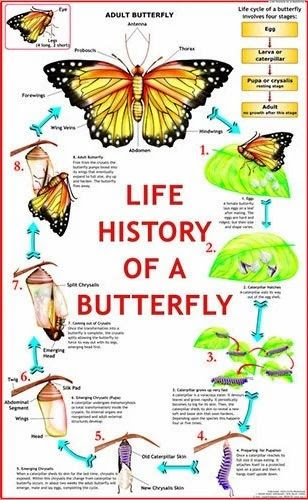

Butterflies are the adult flying stage of certain insects belonging to an order or group called Lepidoptera. Moths also belong to this group. The word "Lepidoptera" means "scaly wings" in Greek.
The world's continents were much closer when butterflies originated 100 million years ago. Butterflies originated in North/Central America before dispersing into other parts of the globe in a complicated crosshatch of flyways that ultimately led to their current distributions.
Metamorphosis is a series of major changes in an animal's body form as it moves through its life cycle. Butterflies and moths undergo a complete metamorphosis, which means there are four separate stages in the life cycle (egg, larva, pupa, and adult).